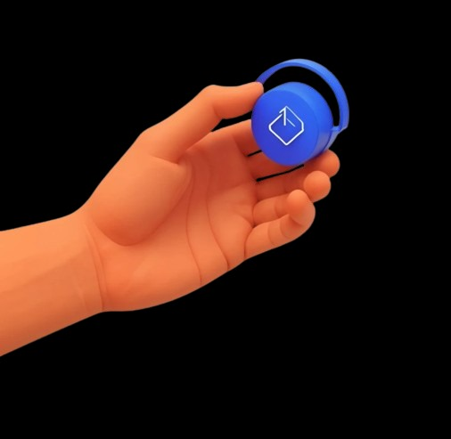

Visual Voice
In Sign Language Recognition System, we are dedicated to
revolutionizing the way people communicate. Our approach to developing
sign language recognition technology combines innovation,
user-centered design, and ethical practices to create solutions that
are both advanced and accessible.


About Us
Welcome to Visual Voice , where we harness the power of technology to bridge the gap between the deaf and hearing communities. Our mission is to create a world where communication is seamless and inclusive for everyone, regardless of their hearing abilities.
Our Approach
Our Visual Voice utilizes a combination of computer vision, machine learning, and natural language processing techniques to accurately interpret and respond to sign language gestures. By leveraging the latest advancements in artificial intelligence and deep learning.
Power of Sign Language
Visual Voice technology has the potential to revolutionize the way we communicate and interact with digital devices. By enabling seamless translation between sign language and written or spoken language, our solution can empower individuals with hearing impairments to fully participate in the digital world.
Our Commitment to Accessibility
We envision a future where everyone has the tools and resources to communicate effectively, fostering understanding and connection in all aspects of life. Our innovative sign language recognition system is designed to break down barriers and make communication accessible to all. In Sign Language Recognition System, our mission is to enable real-time, accurate, and efficient translation of sign language into spoken and written forms. We are dedicated to continuously improving our technology to support and empower the deaf community.